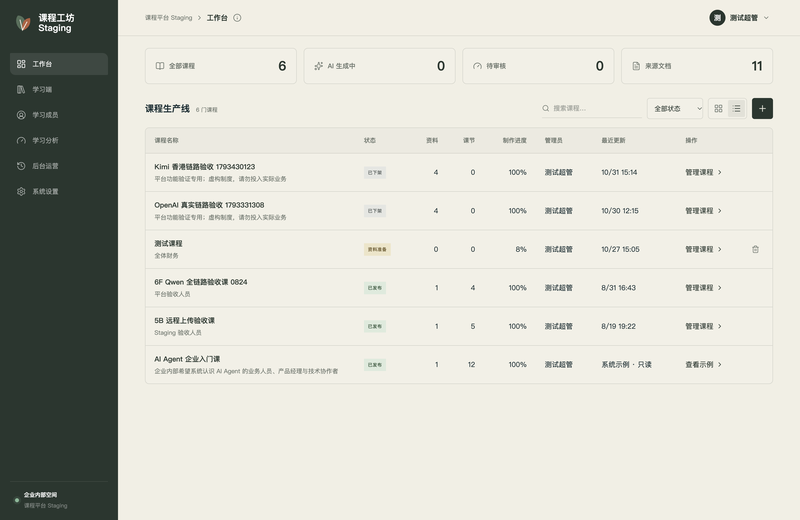
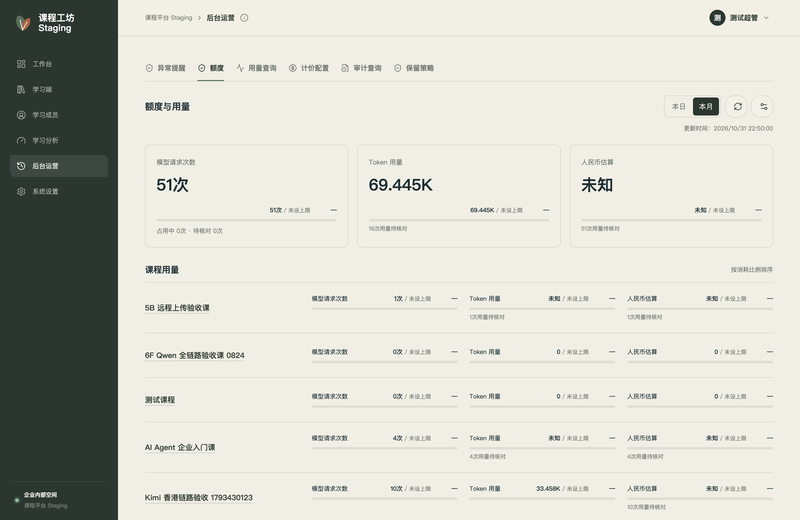

从资料中找到学习目标
把制度、业务文档与案例放在一起，围绕岗位的实际任务，整理需要掌握的知识和操作。
随堂练习
设计一门入职课程，第一步应该做什么？
课坊 / V0.5.4
上传企业资料，AI 辅助制课。
审核、发布与员工学习，
在一个平台衔接。
让业务知识
成为课程内容。

员工可以接着上次的进度学习，回顾收藏与错题。AI 助教基于有权访问的课程资料答疑，并附来源引用。
体验公开课程把制度、业务文档与案例放在一起，围绕岗位的实际任务，整理需要掌握的知识和操作。
设计一门入职课程，第一步应该做什么？
AI 辅助生成课程。核对来源、编辑内容，审核后再发布给学习成员。
支持 PDF、扫描件、Word 和 Markdown。
进度分阶段保存，中断后可继续。
通过企业课程目录或邀请码进入。
分别设置主模型、备用模型与 OCR 文档识别模型。
设置企业或课程配额，查询用量与费用估算。
跟踪任务异常、预算提醒与操作审计，保留处理记录。

围绕培训场景与交付范围，
沟通适合企业的使用方案。
可以配置名称、Logo、配色、助教形象与学习首页主题。
通过企业课程目录或邀请码进入。OIDC 企业登录需对接企业身份系统并验证。
可配置主模型、备用模型和 OCR；接口兼容性需结合所用服务验证。
课坊平台尚未开源。使用授权、实施范围与费用通过咨询确定。